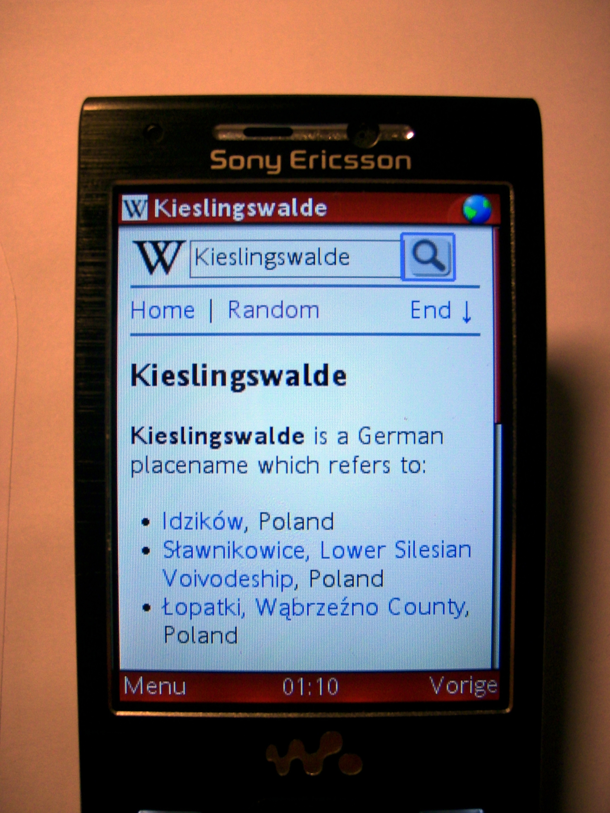
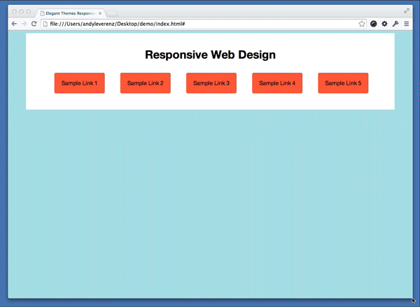
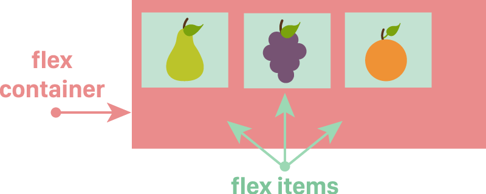
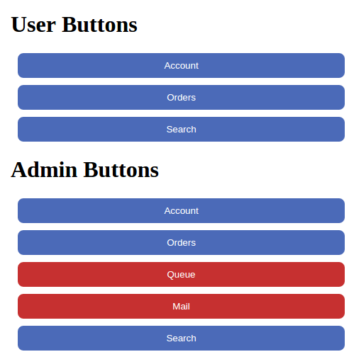

Laying out future web design with flexbox and css3
Nixon Galario / Nixon Galario
Front-End Developer

A little history
- 1995 Description of point 1
- 2009 Description of point 1
- 2010 Description of point 2
- 2011 Description of point 3
- 2012 Description of point 3
- 2016 Description of point 3
1995
Web design is not as good today


33% of users were still browsing with IE5 in mid-2003, impossible to make a tableless website that would render in IE5 properly
Mobile Wap!
Media Queries!
- 1995 Description of point 1
- 2009 Description of point 1
- 2010 Description of point 2
- 2011 Description of point 3
- 2012 Description of point 3
- 2016 Description of point 3
2009 :
Original Flexbox as working draft. Chrome and Safari has partial support uses Old syntax *box
.flex-container {
display : box ; /* old */
}
- 1995 Description of point 1
- 2009 Description of point 1
- 2010 Description of point 2
- 2011 Description of point 3
- 2012 Description of point 3
- 2016 Description of point 3
2010 :
Partially supported by webkit browsers but then spec killed!
- 1995 Description of point 1
- 2009 Description of point 1
- 2010 Description of point 2
- 2011 Description of point 3
- 2012 Description of point 3
- 2016 Description of point 3
2011 :
Arrival of Flexbox Spec also known as Tweener Spec only implemented in IE10. You should avoid it if possible.
- 1995 Description of point 1
- 2009 Description of point 1
- 2010 Description of point 2
- 2011 Description of point 3
- 2012 Description of point 3
- 2016 Description of point 3
2012 :
Modern Spec Revision and it is the new hotness!, with excellent browser support
- 1995 Description of point 1
- 2009 Description of point 1
- 2010 Description of point 2
- 2011 Description of point 3
- 2012 Description of point 3
- 2016 Description of point 3
2016 and Future :
Time now and beyond!
What is Flexbox?
The Flexbox Layout officially called CSS Flexible Box Layout Module is new layout module in CSS3 made to improve the items align, directions and order in the container even when they are with dynamic or even unknown size.
Some points :
-Flexbox is Flexible! You can grow or shrink and flex to fit available space.
-Easy alignment means less Headache for accurate measurements
-Item order (not on javascript!)
- Easy syntax :D
Basics : Flexbox containers

Image credit: Flexbox Cheatsheet
Basics : Flexbox containers
.flex-container {
display : flex ;
flex-direction : row ; /* default / aligns left*/
}

Basics : Flexbox containers
.flex-container {
display : flex ;
flex-direction : column ; /* default / aligns left*/
}
.flex-container {
flex-direction : row-reverse ; /* aligns right / like float right */
}

.flex-container {
flex-direction : column-reverse ;
}

Flexxy Time!
Flexxy Time!
Flex-wrap property
wrap || wrap-reverse || nowrap
.flex-container {
flex-wrap: wrap; /* nowrap || wrap-reverse */
}
Let's do Shorthand
Flex-Flow : flex-direction || flex-wrap
.flex-container {
Flex-Flow : /* row wrap */
}
Default value: row nowrap
Easily sort items!
Easily sort items!
.flex-item:first-child {
-webkit-order: /integer/; /* Safari */
order: /integer/;
}
First CSS Problem?

Flexbox Power!
Vertical Centering
Insert
justify-content: center;
How to use it in Real World?
Float
Width
Clear
Float
Width
Clear
Flex item to
flex : 1 ;
Basic Layout

Flexxy Time 2!
More Guide Here
.flex-container {
/*display: flex;
flex-flow: row wrap;*/
}
.nav {
/*flex: 1;*/
/* order: 1; */
}
.content {
/*flex: 4;*/
}
.sidebar {
/*flex: 2;*/
}
.header,
.footer {
/*flex: 100%;*/
text-align: center;
}
Combine Flexbox and Media Query!
@media (max-width: 700px) {
.nav {
flex: 100%;
}
.nav li {
display: inline;
}
}
@media (max-width: 500px) {
.content,
.sidebar {
flex: 100%;
}
}
Got a problem on buttons? with Unknown number of Items?
Height problem
display : flex ;
it gives ideal adjusting responsiveness !!
Solve it hereSummary
Flexible layouts
Distribute Extra Space
Align Content
Align Items on container or individually
Real World Example
Use it on your next project
Laying out future web design with flexbox and css3
Resource and Example : http://nixongalario.com
Email me : nixongalario@gmail.com